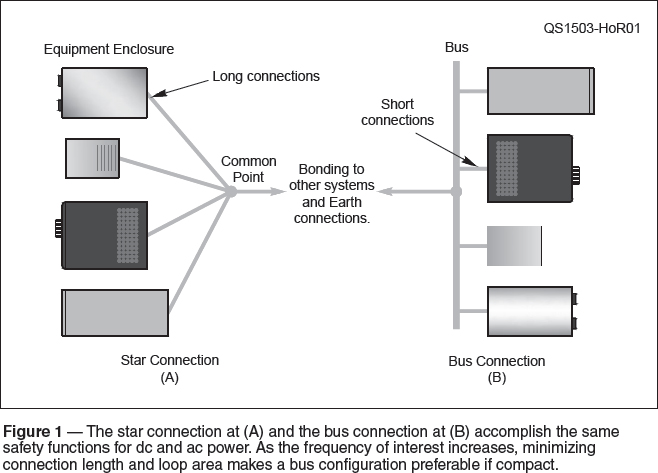
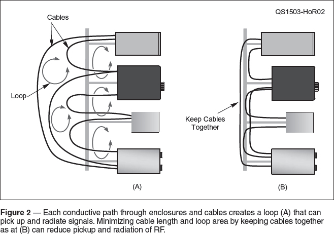
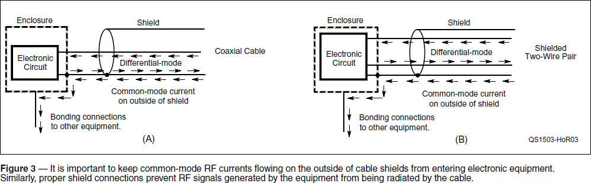

Experiment #146— Notes on Bonding and Shielding
One of the challenges facing the average ham trying to build a station is that the information needed is not collected in one place. Electrical safety (ac safety grounding) is discussed in one place, while lightning protection is discussed in another, and controlling RF is in yet other places. As we’ve seen, however, the needs for all three have much in common, including the physical wiring. The ham needs to read up on all three and approach station-building with a comprehensive strategy.
Bonding Conductors
One of the more popular materials hams use for “ground” connections is braided strap or shield braid removed from old coaxial cable, but that is not a good idea. Here is the problem — the wires in a coaxial cable shield are pressed together and protected from moisture and contaminants by the jacket. Once the jacket is removed, the wires slowly begin to corrode and the weave loosens. Pretty soon all those individual tiny wires start acting less like a large, flat surface and more like, well, individual tiny wires with poor connections between them. This is not very good for conducting RF.
For bonding at RF, use heavy wire or strap, such as copper or aluminum flashing. Solid wire, such as #14 or #12 AWG from home wiring cable, or stranded THHN wire works fine. The important thing is to maximize surface area because of the skin effect at RF.1 For dc connections and for ac safety grounding, which are more concerned with resistance, braided strap is acceptable. Braid should also be used for bonding in high-vibration environments, but that’s not necessary for most ham shacks, even mobile installations. For lightning protection and bonding earth connections together, use heavy wire or strap to minimize impedance and for mechanical strength.
Star Versus Bus Configurations
The answer to the question, “Should I use a star or a bus connection?” (see Figure 1) depends on what you are trying to accomplish. At dc and low frequencies, where resistance is the primary consideration, both are equivalent and the star connection is usually more convenient. At the higher frequencies involved for lightning protection, inductance becomes the most important characteristic. A star configuration with reasonably short connections will still provide adequate bonding.

At RF, however, the electrical length of the connection is the dominant consideration. The bus and star are trying to accomplish the same thing — keeping all of the equipment at the same voltage — but the bus does the job with shorter connections.2 The length of the bus must be kept to a minimum. Connecting the enclosures directly together with individual wires is an alternative to using a separate bus conductor.
While trying to address ac safety, lightning, and RF control sounds complicated, minimizing the physical length of bonding connections addresses all of these concerns in the typical strong RF fields of a ham station. Bonding enclosure to enclosure using short conductors between interconnected equipment works for all three needs.
Minimizing Loop Area
The inductance of a one-turn circular loop is directly proportional to the natural log (ln) of the loop’s radius: the bigger the loop, the greater the inductance. As inductance increases, so will the voltage between any two points in the loop whether the voltage is induced by a magnetic field or a rapidly changing current pulse.
What loop is this, you ask? The typical ham station is full of loops created by the shields of interconnecting cables, antenna system and control cables, ground connections, etc. Figure 2A shows the basic idea, and there are many more loops than the ones indicated in the drawing. Every complete conductive path around enclosures and cables counts as a loop.

Eliminating these loops is not realistic. Minimizing their area, on the other hand, is a productive strategy. First, use the minimum cable length. If you have two pieces of equipment 6 inches apart connected with a 6-foot cable, replace that cable with a shorter one and coil up any extra length.
Next, minimize the area of each loop. Where several cables run in the same general area, use wire ties or a cable tray to hold them close together. Separate wires for power and ground should be twisted together, as should audio connections to speakers. If you use a bus for bonding equipment enclosures together, consider running your interconnecting cables along the bus as in Figure 2B, further reducing loop area.
Connecting Shields
Most hams understand the need to connect the shields of RF-carrying coaxial cables to metal enclosures, as in Figure 3A. One analogy is that of creating a “water-tight” connection as if the differential-mode RF signal was a fluid to be kept within enclosures and cable shield. This keeps any contaminating common-mode RF currents on the outside of the cable or enclosure. It also eliminates unwanted radiation of the RF signal from the internal electronics.

The same concerns apply to unbalanced data and audio connections. Figure 3B shows a two-wire connection with a shield, such as for one circuit of an unbalanced RS-232 interface. From the perspective of both susceptibility to interference and interference-causing, it is important that the external shield be connected to the enclosure and that any separate signal ground connections not connect to the enclosure. Keep internal signals and RF inside the cable and external RF out of the cable. Using twisted-pair cabling also helps prevent RF pickup and radiation.
Unfortunately, it is common practice in amateur equipment for multi-circuit connectors such as mono and stereo phone plugs to have their shield connections (usually referred to as the sleeve) isolated from the metal enclosure. Instead, the shields are often connected to an internal common point on a circuit board which is then connected back to the enclosure. Known in pro audio circles as the “Pin 1 Problem” because shields of audio cables are connected to Pin 1 of the standard XLR connector, this routes RF current on the outside of the cable shield to the internal electronics where it can do the most damage. At the same time, RF noise and harmonics from the electronics are routed to the outside world.
Worse, shields are sometimes left completely unconnected. This allows the RF current to enter the cable and flow into the electronics of whatever is connected. For a demonstration, turn on your HF transceiver and connect it to a dummy load. Even a short cable will do. Turn off any preamp or front-end filtering.3 Note the level of background noise on, say, 20 meters. Now unscrew the shell of the PL-259 at the transceiver, leaving the center pin connected. The dramatic increase in noise is from signals being picked up by the cable shield and entering the cable to become differential-mode signals at the open end of the shield.
The ARRL’s Safety page (www.arrl.org/safety) and RFI page (www.arrl.org/radio-frequency-interference-rfi) list many references and detailed articles to teach more about these topics.
Notes
1The ARRL Handbook, 92nd edition, (Newing-ton: 2014), “Chapter 5: RF Techniques,” p 5.1.
2See the Hands-On Radio web page (www.arrl.org/hands-on-radio) for Experiments #145 and #146.
3If the receiver has a high-impedance input, this demonstration may require a 6 to 10 dB 50 Ω attenuator at the inputs.